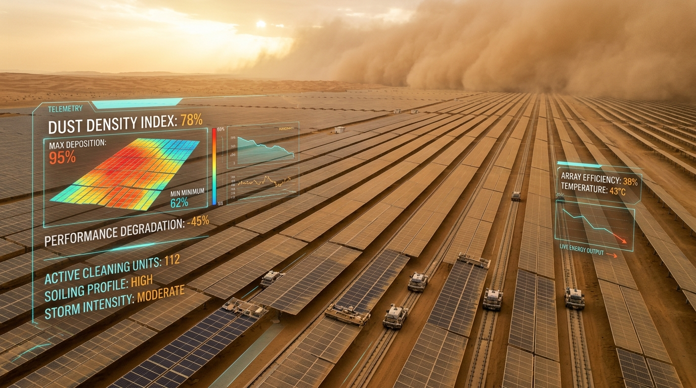

Predict High-Consequence Failures before desert impacts occur.
SAHARYN fuses live space-borne satellite feeds with physics-informed causal mechanics to predict heavy equipment breakdowns up to 48 hours in advance across desert operations.
Built for High-Consequence Desert Assets
Protecting national critical infrastructure against extreme sandstorms, high ambient heat, and abrasive dust cycles.

Solar PV & Dust Soiling Intelligence
Predicting dust deposition index (DDI), optical transmittance loss, and thermal hotspots across utility-scale desert solar farms to trigger autonomous robotic cleaning before power yields collapse.
SOLAR PV & INVERTER ARRAYSGas Turbines & Upstream Compressors
Preventing compressor surge, gas turbine blade erosion, and seal failures in desert production facilities across the Eastern Province and Rub' Al Khali.
GAS COMPRESSORS & PUMPSWater & Desalination Infrastructure
Monitoring high-pressure intake pumps and reverse osmosis filtration membranes subject to high particulate loads and salinity.
HIGH-PRESSURE RO PUMPS5 Sovereign Mechanisms of Action
Eliminating the "black-box" dilemma of standard machine learning through verifiable physics and mathematical proof.
Satellite Atmospheric Fusion
Direct programmatic ingestion of NASA MODIS (MOD04_L2) and Copernicus Sentinel-2/CAMS. Real-time mapping of particle diameter, AOD, and kinetic dust momentum.
NASA & ESA LIVE INGESTIONPhysics-Informed Digital Twins
Solving boundary condition Navier-Stokes and Arrhenius chemical degradation equations in real time to model abrasion kinetics and thermal stress.
PINNs & ARRHENIUS DECAYExplainable Causal Manifold
A strict 11-node Directed Acyclic Graph (DAG) enforcing anti-hallucination. Generates step-by-step cryptographic causal chains from weather triggers to mechanical outcomes.
IEEE 1232 COMPLIANTPrescriptive Financial Optimizer
Calculates financial ROI and avoided loss metrics for every condition. Generates clear, advisory operational directives (e.g. backflush HEPA filtration, dynamic load modulation).
ROI-DRIVEN PRESCRIPTIONSCryptographic Sovereign ESG Ledger
Quantifies Scope 3 lifecycle manufacturing carbon avoided by extending asset useful life. Every claim is cryptographically chained with SHA-256 Merkle proofs for audit defensibility.
ISO 14064-3 ALIGNEDAir-Gapped Sovereign Edge
Critical national infrastructure requires absolute data sovereignty. Instantly sever cloud uplinks and execute 100% of causal inference locally inside Riyadh or NEOM industrial boundaries.
ZERO DATA EGRESSArchitected for Critical Infrastructure
Engineered in strict alignment with international cybersecurity, explainability, and carbon accounting protocols.